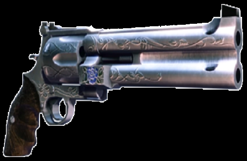

A Blue Rose é a arma de longo alcance projetada pessoalmente por Nero. É um revólver único com um estilo cano superior e inferior, este design permite disparar dois tiros magnum com cada puxar do gatilho.
Como o Ebony & Ivory do próprio Dante, a Blue Rose pode ser carregada por Nero canalizando a energia do Devil Bringer para o revólver. Esta habilidade de carga tem três níveis quando totalmente atualizada,
cada um exigindo mais energia para ser canalizado do braço demoníaco de Nero. Eles são representados pelo Devil Bringer brilhando em cores diferentes, com uma carga de nível um sendo azul, de nível dois roxa
e de nível três vermelha. No nível três de carga, haverá um impacto explosivo inicial, seguido por uma segunda explosão após um pequeno atraso, ambos com dano AoE e uma tendência de derrubar os inimigos no ar.